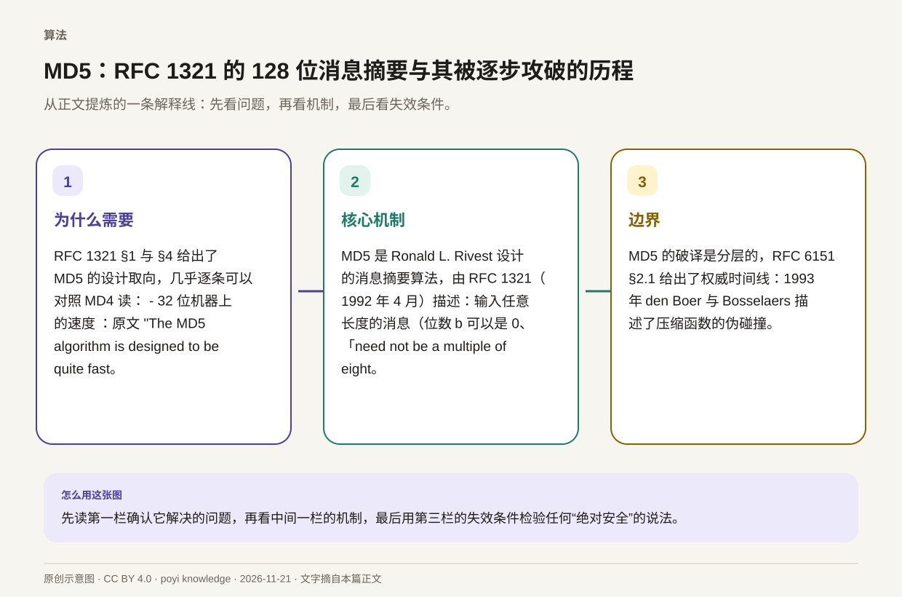
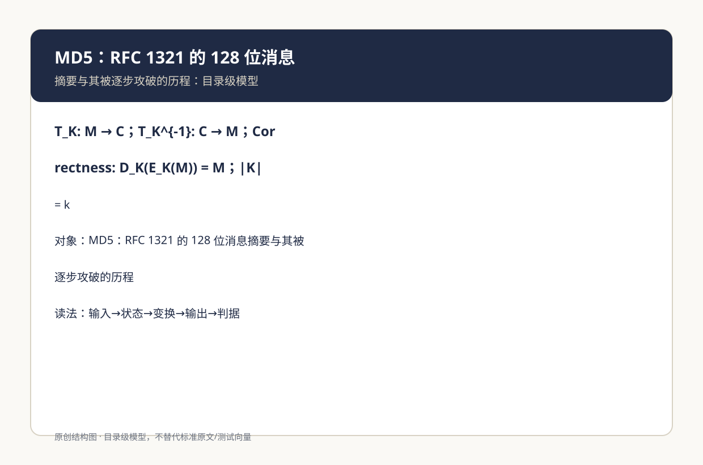

原理与机制
算法：MD5 散列（MD5）。MD5 是 Ronald L.Rivest 设计的消息摘要算法，由 RFC 1321（1992 年 4 月）描述：输入任意长度的消息（位数 b 可以是 0、「need not be a multiple of eight, and」不必是 8 的倍数、也可以任意大；本副本把该短语断在两行上），输出固定的 128 位（16 字节）"fingerprint"（指纹）或"message digest"（消息摘要）。RFC 1321 §1 的原话是："it is computationally infeasible to produce two messages having the same message digest, or to produce any message having a given prespecified target message digest"，即猜测找出两条相同摘要的消息、或找出具有某个预定目标摘要的消息，在计算上都是不可行的；目标应用是数字签名——源文作「where a large file must be」"compressed"「in a secure manner before being encrypted with a private」，再接 key（本副本把这两处各断在两行上），即先用摘要把大文件安全地压缩，再交给 RSA 之类的公钥密码体制用私钥加密（即数字签名）。MD5 的基本参数：以 512 位（16 个 32 位字）为一个消息块处理；状态是 A、B、C、D 四个 32 位寄存器；输出 128 位。RFC 1321 §2 "Terminology and Notation" 的记号约定与 MD4 完全相同：一个 word（字）是 32 位量、一个 byte（字节）是 8 位量；字节序列按低序（最低有效）字节在前解释成字（小端），原文为 "a sequence of bytes can be interpreted as a sequence of 32-bit words, where each consecutive group of four bytes is interpreted as a word with the low-order (least significant) byte given first"；"+" 表示字加法即模 2^32 加法；X <<< s 表示 32 位循环左移 s 位；not(X)、X v Y、X xor Y、XY 分别是按位非、按位或、按位异或、按位与。计算摘要分五步（RFC 1321 §3）：
1.填充（§3.1）：先追加一个 "1" 位（实现上是 0x80 字节），再补 "0" 位，使消息的比特长度「congruent to 448, modulo 512」（对 512 同余于 448，源文这一句本身就带逗号）；备忘录对这个事实的原话是 "the message is extended so that it is just 64 bits shy of being a multiple of 512 bits long"（把消息延长到刚好比 512 的整数倍少 64 位）；合计「at least one bit and at most 512 bits are appended」（至少补 1 位、至多补 512 位）。即使消息长度已经同余于 448，也总是填充。2.追加长度（§3.2）：原文作「A 64-bit representation of b (the length」（b 的 64 位表示，b 是填充前的消息长度），把该长度追加进去，按两个 32 位字、先低字后高字写入；若 b 超过 2^64，只用其低 64 位。结果「has a length that is an exact multiple of 512 bits」（其长度为 512 位的整数倍），即 16 字块的整数倍，记为 M[0..N-1]。3.初始化缓冲（§3.3）：四个 32 位寄存器 "in hexadecimal, low-order bytes first"（以十六进制、低序字节先）初始化为
- word A:
01 23 45 67（即字 0x67452301） - word B:
89 ab cd ef（即字 0xefcdab89） - word C:
fe dc ba 98（即字 0x98badcfe） - word D:
76 54 32 10（即字 0x10325476）
这组 IV 与 MD4 的 IV 逐字相同，也有同样的便于手算的性质：C = not(A)、D = not(B)。4.逐块处理（§3.4）：每块先用四个辅助函数之一做 64 次操作，再回加。四个函数都取三个 32 位字、输出一个 32 位字：
F(X,Y,Z) = XY v not(X) Z——按位条件选择：X 为 1 取 Y，否则取 Z；RFC 特别指出 "The function F could have been defined using + instead of v since XY and not(X)Z will never have 1's in the same bit position"，即可以用 + 代替 v，因为XY与not(X)Z不会在同一位上同时为 1；G(X,Y,Z) = XZ v Y not(Z)——MD5 对 MD4 的多数函数做了替换，见下文为什么这样设计；H(X,Y,Z) = X xor Y xor Z——按位奇偶函数；I(X,Y,Z) = Y xor (X v not(Z))。RFC 对 F 写道："if the bits of X, Y, and Z are independent and unbiased, the each bit of F(X,Y,Z) will be independent and unbiased"（若 X、Y、Z 的比特相互独立且无偏，则 F(X,Y,Z) 的每个比特也相互独立且无偏；这一行原文把 then 印作了 the），对 G、H、I 则写道："if the corresponding bits of X, Y, and Z are independent and unbiased, then each bit of G(X,Y,Z), H(X,Y,Z), and I(X,Y,Z) will be independent and unbiased"（若 X、Y、Z 的对应比特相互独立且无偏，则三者每个输出比特也相互独立且无偏）。第 4 步 "uses a 64-element table T[1 ...64] constructed from the sine function"（使用一张由正弦函数构造的 64 元素表）；T[i]是该表第 i 项，"which is equal to the integer part of 4294967296 times abs(sin(i)), where i is in radians"（等于 4294967296 × abs(sin(i)) 的整数部分，i 以弧度计），并且 "The elements of the table are given in the appendix"（表的元素列在附录中）。记号[abcd k s i]表示a = b + ((a + Φ(b,c,d) + X[k] + T[i]) <<< s)，其中 Φ 是当前轮的函数。注意被旋转的是括号内的和，寄存器 b 是在旋转之后加上的。每轮 16 次操作里寄存器角色按 ABCD → DABC → CDAB → BCDA 循环轮转。四轮的消息字顺序、旋转量与所用常量下标是：- 第 1 轮（F，T[1..16]）：k = 0,1,…,15；s 循环 (7, 12, 17, 22)。- 第 2 轮（G，T[17..32]）：k = 1,6,11,0,5,10,15,4,9,14,3,8,13,2,7,12；s 循环 (5, 9, 14, 20)。- 第 3 轮（H，T[33..48]）：k = 5,8,11,14,1,4,7,10,13,0,3,6,9,12,15,2；s 循环 (4, 11, 16, 23)。- 第 4 轮（I，T[49..64]）：k = 0,7,14,5,12,3,10,1,8,15,6,13,4,11,2,9；s 循环 (6, 10, 15, 21)。每块开始前把 A、B、C、D 存为 AA、BB、CC、DD；64 次操作之后做
A = A + AA、B = B + BB、C = C + CC、D = D + DD（feed-forward，回加）。5.输出（§3.5）：摘要就是 A、B、C、D，从 A 的低序字节开始、到 D 的高序字节结束。

为什么重要
RFC 1321 §1 与 §4 给出了 MD5 的设计取向，几乎逐条可以对照 MD4 读：
- 32 位机器上的速度：原文 "The MD5 algorithm is designed to be quite fast on 32-bit machines"，并且 "does not require any large substitution tables"，"can be coded quite compactly"（设计为在 32 位机器上相当快，不需要任何大的替换表，可实现得相当紧凑）。每 512 位块 64 次操作，每次只有若干次模 2^32 加法、一条按位函数、一条循环左移，全部落在 32 位通用指令上。- 对 MD4 的退让：RFC 明确说 MD5 是 MD4 的扩展，比 MD4 稍慢但设计上更 "conservative"。理由是 MD4 被认为 "adopted for use more quickly than justified by the existing critical review"，而 MD4 因为被设计得异常快，就「in terms of risking successful cryptanalytic attack」（冒着被成功密码分析攻击的风险）而言处于源文所说的 "at the edge"（边缘）位置——本副本把 in terms of risking successful cryptanalytic attack 断在两行上。MD5 因此 "backs off a bit, giving up a little in speed for a much greater likelihood of ultimate security"，并 "incorporates some suggestions made by various reviewers, and contains additional optimizations"。- 公有领域：MD5 算法本身原文 "being placed in the public domain for review and possible adoption as a standard"（被置于公有领域以供审查并可能被采纳为标准）。注意置于公有领域的是算法；附录 A 的参考代码取自 RSAREF，仍带 RSA Data Security, Inc.的版权（1991-2）与许可声明。- 签名场景：目标是在 "under a public-key cryptosystem such as RSA"（RSA 这类公钥密码体制下）用私钥加密之前，先把大文件以安全方式压缩。RFC 1321 §5 逐条列出 MD5 相对 MD4 的六处改动，这是理解 MD5 结构最直接的材料：
1.增加了第四轮（三轮 48 次操作 → 四轮 64 次操作）。2.每一步都有唯一的附加常量（MD4 只有两个轮常量）。3.原文 "The function g in round 2 was changed from (XY v XZ v YZ) to (XZ v Y not(Z)) to make g less symmetric"（第 2 轮的 g 从多数函数改成不那么对称的形式）。4.原文「Each step now adds in the result of the previous step」（每一步都加上前一步的结果，即旋转后再加寄存器 b）、「promotes a faster "avalanche effect"」（促进更快的雪崩效应；RFC 自己给这个词组加了 ASCII 引号，这里照原样保留）。5.原文："The order in which input words are accessed in rounds 2 and 3 is changed, to make these patterns less like each other."（第 2、3 轮访问输入字的顺序被改变，使这两轮的模式彼此不那么相似）。6.原文："The shift amounts in each round have been approximately optimized"（每轮旋转量经过近似优化），以得到更快的雪崩效应；不同轮的旋转量互不相同。第 2 点解释了 64 元素正弦表的用途：MD5 需要 64 个两两不同的常量，RFC 用一条公开公式（4294967296 × abs(sin(i)) 的整数部分）生成它们并在附录列出。RFC 1321 没有为选用正弦给出任何理由，也没有把这些常量对应到某个数学常数——这与 RFC 1320 不同：它对 MD4 的两个轮常量各写一句——"This constant represents the square root of 2"（这个常量表示 2 的平方根）与 "This constant represents the square root of 3"（这个常量表示 3 的平方根）——并给出各自的八进制值。RFC 1321 §4 的猜测是：「coming up with two messages having the same…digest is on the order of 2^64 operations, and…coming up with any message having a given…digest is on the order of 2^128 operations」（找出两条摘要相同的消息约需 2^64 次操作，找出给定摘要的任意消息约需 2^128 次操作；引号里的 … 是本文对源文长句的省略，与英文面同一处）；同一节也说 MD5 已被 "carefully scrutinized for weaknesses"（仔细审查过弱点），但它是 "a relatively new algorithm"（相对较新的算法），进一步的安全分析当然是正当的。原文的安全考虑一节写道："The level of security discussed in this memo is considered to be sufficient for implementing very high security hybrid digital-signature schemes based on MD5 and a public-key cryptosystem"（本备忘录讨论的安全级别被认为足以实现基于 MD5 与公钥密码体制的、很高安全级别的混合数字签名方案）。这一节后来被 RFC 6151 整体替换（RFC 6151 同时更新的是 RFC 2104 中 HMAC 的安全考虑，措辞上是 "replaces" 前者、"updates" 后者）。
应用与实例
RFC 1321 §1 给出 MD5 的官方身份标识：对象标识符
md5 OBJECT IDENTIFIER ::=
iso(1) member-body(2) US(840) rsadsi(113549) digestAlgorithm(2) 5}
即 OID 1.2.840.113549.2.5；并规定在 X.509 的 AlgorithmIdentifier 类型中，MD5 的参数应为 NULL 类型。RFC 3370（R.Housley，2002 年 8 月，标准轨道，取代 RFC 2630 与 RFC 3211）§2.2 把这一 OID 原样写入 CMS 的约定：MD5 摘要算法定义于 RFC 1321，AlgorithmIdentifier 的 parameters 字段必须存在且必须包含 NULL，实现也可以接受 parameters 缺失或为 NULL 的写法。同文档 §3.2 原文："CMS implementations that include the RSA (PKCS #1 v1.5) signature algorithm MUST also implement the SHA-1 message digest algorithm.Such implementations SHOULD also support the MD5 message digest algorithm."（含 RSA（PKCS #1 v1.5）签名算法的 CMS 实现必须也实现 SHA-1 消息摘要算法；这类实现应当（SHOULD）也支持 MD5 消息摘要算法）。RFC 8017（PKCS #1 v2.2，2016 年 11 月，取代 RFC 3447）保留了 MD5 在 RSA 签名里的标识与编码：附录 A.2.4 的 RSASSA-PKCS1-v1_5 OID 表中 md5WithRSAEncryption ::= {pkcs-1 4}，并注明 "Note that if either MD2 or MD5 is used, then the OID is just as in PKCS #1 v1.5"（使用 MD2 或 MD5 时，OID 与 PKCS #1 v1.5 的注册完全相同）；§9.2 的注记给出 EMSA-PKCS1-v1_5 中 DigestInfo 的 DER 前缀，MD5 对应
30 20 30 0c 06 08 2a 86 48 86 f7 0d 02 05 05 00 04 10 || H
这串前缀至今仍是许多签名实现里 MD5 + RSA 的字节级指纹。MD5 今天仍在常规部署的少数场景之一是 Windows 的 NTLM v2 认证。微软开放规范 MS-NLMP §3.3.2 定义 NT 单向函数 v2：
Define NTOWFv2(Passwd, User, UserDom) as HMAC_MD5(
MD4(UNICODE(Passwd)),
UNICODE(ConcatenationOf( Uppercase(User), UserDom ) ) )
即 MD5 以 HMAC-MD5 的形式出现在 NTLM v2 的响应密钥里，其 HMAC 密钥正是 NTLM v1 的“NTLM (NT) hash”（即密码 UTF-16LE 编码的 MD4 摘要）；LMOWFv2 定义为与 NTOWFv2 相同。规范 §4.2.2.1.2 给出 NTOWFv1("Password", "User", "Domain") = a4 f4 9c 40 65 10 bd ca b6 82 4e e7 c3 0f d8 52，§4.2.4.1.1 给出 NTOWFv2("Password", "User", "Domain") = 0c 86 8a 40 3b fd 7a 93 a3 00 1e f2 2e f0 2e 3f——后者可以用任意标准 HMAC-MD5 实现复算，本批次的 vectors.json 就把它作为一条外部对照向量。同一规范还把 HMAC-MD5 用于 NTLM 会话安全的消息完整性码：§3.1.5.1.2 的伪代码写着 Set MIC to HMAC_MD5(ExportedSessionKey, ConcatenationOf(NEGOTIATE_MESSAGE, CHALLENGE_MESSAGE, AUTHENTICATE_MESSAGE))；§5.2 的 "Index of Security Parameters"（安全参数索引）把"MD4/MD5 usage in NTLM v1"指向 §3.3.1、"MD4/MD5 usage in NTLM v2"指向 §3.3.2、"MD5/RC4 usage during session security"指向 §3.4。该文档当前版本为 37.0，发布于 2026 年 3 月 30 日。RFC 6151（2011 年 3 月）区分了 MD5 的几种用途：原文："Where the MD5 checksum is used inline with the protocol solely to protect against errors, an MD5 checksum is still an acceptable use."（如果 MD5 校验和只是与协议内联使用、单纯用于防错，那么它仍是可接受的用法）。但任何使用 MD5 的应用与协议都需要在自己的安全考虑里写清楚期望 MD5 提供哪种安全服务。同一文档指出原文「It is not urgent to stop using」HMAC-MD5（停用 HMAC-MD5 并不紧急），但由于 MD5 绝不可用于需要碰撞抗性的场合，「new protocol designs should not employ HMAC-MD5」（新协议设计不应再引入 HMAC-MD5），可选替代是 HMAC-SHA256，或在 AES 比哈希函数更易得时使用 AES-CMAC。需要强调：在一切要求碰撞抗性的场合（数字签名、证书、代码签名），MD5 都已不可用；NTLM 中的使用属于遗留协议兼容。

边界与攻击面
MD5 的破译是分层的，RFC 6151 §2.1 给出了权威时间线：1993 年 den Boer 与 Bosselaers 描述了压缩函数的伪碰撞；1996 年 Dobbertin 原文："demonstrated a collision pair for the MD5 compression function with a chosen initial value"（展示了 MD5 压缩函数在选定初值下的一对碰撞）；王小云、冯登国、Xuejia Lai、余洪波 2004 年的论文第一次给出 MD5 的两对碰撞；2005 年 EUROCRYPT 上王小云与余洪波的论文公布了详细攻击技术。王小云与余洪波（EUROCRYPT 2005，LNCS 3494，pp.19-35）的关键创新是模差分（modular differential）：与块密码中用异或度量差分的传统差分分析不同，该攻击用模 2^32 整数减法定义差分 ΔX = X' − X。论文摘要原文："The attack is a differential attack, which unlike most differential attacks, does not use the exclusive-or as a measure of difference, but instead uses modular integer subtraction as the measure."（这是一次差分攻击，但与多数差分攻击不同，它不用异或作为差分度量，而用模整数减法作为度量），作者把这类差分称作模差分。攻击找的是两条各含两个 512 位块的消息 (M0, M1) 与 (M0', M1')，使它们从 MD5 的标准 IV 出发，在第一块后得到不同的链接值 (a,b,c,d) 与 (a',b',c',d')，再在第二块后碰撞。论文给出的复杂度是：找第一块对 (M0, M0') 约 2^39 次 MD5 操作，找第二块对 (M1, M1') 约 2^32 次 MD5 操作。差分概率方面：只用单消息修改时，第一次迭代差分以概率 2^-43 成立、第二次以 2^-37 成立；再用多消息修改把第 2-4 轮的 37 个条件变为未定后，第一次迭代差分概率升到 2^-37、第二次升到 2^-30。论文实测：在 IBM P690 上找 M0 与 M0' 约需一小时，最快的情形只需 15 分钟；之后找第二块对只需 15 秒到 5 分钟。在 MD5 被彻底攻破之前，已知最好的结果是一个半自由初值（semi free-start）碰撞。王小云等 §1 回顾了这两步：1993 年 den Boer 与 Bosselaers 找到的伪碰撞原文 "consists of the same message with two different sets of initial values"（由同一条消息配两组不同的初值构成），并且论文称它 "discloses the weak avalanche in the most significant bit"（在最高有效位上暴露弱雪崩），对 MD5 的所有链接变量都成立；在 1996 年 EUROCRYPT 的 rump session 上，Dobbertin "presented a semi free-start collision which consists of two different 512-bit messages with a chosen initial value"（报告了一个半自由初值碰撞，由两条不同的 512 位消息配上某个选定初值构成），那个初值是 a0 = 0x12ac2375, b0 = 0x3b341042, c0 = 0x5f62b97c, d0 = 0x4ba763ed。论文摘要称 "The best known result so far was a semi free-start collision, in which the initial value of the hash function is replaced by a non-standard value, which is the result of the attack"。Dobbertin 没能给出真实碰撞，但论文写道他的攻击 "reveals the weak avalanche for the full MD5"（揭示了完整 MD5 的弱雪崩），紧接着的一句是 "This provides a possibility to find a special differential with one iteration"（这提供了在一次迭代内找到特殊差分的可能性）。找到碰撞的实际成本随后一路下降。RFC 6151 §2.1 记录：Klima 的方法（ePrint 2006/105）原文："can find MD5 collision in about one minute on a standard notebook PC (Intel Pentium, 1.6GHz)"（可在标准笔记本 PC 上约一分钟找到 MD5 碰撞）；Stevens 的硕士论文则 "claims that it takes 10 seconds or less on a 2.6Ghz Pentium4 to find collisions"（在 2.6GHz Pentium4 上找到碰撞只需 10 秒或更少，RFC 在这一处把时钟单位写作 Ghz）。更早的 RFC 4270（2005 年 11 月）已经写下 "The attacks against MD5 are practical on any modern computer"（对 MD5 的攻击在任何现代计算机上都是可行的），并引用 Klima 当时 "eight hours on a 1.6-GHz computer"（在 1.6-GHz 计算机上八小时）的结果。碰撞被真正用于攻击 X.509 证书：RFC 6151 §2.1 列出 Stevens 与 Lenstra、de Weger 的选定前缀碰撞及其在 X.509 证书上的应用，并给出标签 [SSALMOdeW2009]——即 Stevens、Sotirov、Appelbaum、Lenstra、Molnar、Osvik、de Weger 在 CRYPTO 2009 的那篇论文；RFC 6151 §4 把这条参考文献著录为 "Short chosen-prefix collisions for MD5 and the creation of a rogue CA certificate"（短选定前缀碰撞与伪造 CA 证书）。同一节还指出原文："the collision attack on MD5 can also be applied to password-based challenge-and-response authentication protocols such as the APOP"（MD5 的碰撞攻击也可以施加到 APOP 这类基于口令的挑战-响应认证协议上）；APOP 即 POP 的认证选项，Leurent 在 FSE 2007 给出了针对它的攻击。但 MD5 被打破的是碰撞抗性这一条性质，不是全部：
- 原像与第二原像：RFC 6151 §2.2 指出，即使最好的结果（Sasaki 与 Aoki，EUROCRYPT 2009）已经快于穷举，其复杂度「2^123.4 is still pretty high」（2^123.4 仍然相当高）。RFC 4270 §2.1 也强调原文："All the currently known practical or almost-practical attacks on MD5 and SHA-1 are collision attacks"（当时所有已知可行的或几乎可行的 MD5 与 SHA-1 攻击都是碰撞攻击），并补充说「significant first- and second-preimage attacks」（重大的第一/第二原像攻击）"would be much more devastating in the real world than collision attacks"（在现实世界中的破坏性会远大于碰撞攻击；本副本把这两处各断在两行上）。- HMAC-MD5：RFC 6151 §2.3 梳理了三条结果。Contini 与 Yin（ASIACRYPT 2006）用相关密钥对 NMAC-MD5 做部分密钥恢复，但该攻击无法扩展到 HMAC-MD5，因为原文写道 "for HMAC, recovering partial secret IVs can hardly lead to recovering (partial) key K"（对 HMAC 而言，恢复部分保密初值几乎不可能导致恢复（部分）密钥 K）；Fouque、Leurent、Nguyen（CRYPTO 2007）把它扩展为 NMAC-MD5 的完整密钥恢复，同样依赖相关密钥，因此看起来不适用于 HMAC-MD5；X.Wang, H.Yu, W.Wang, H.Zhang, T.Zhan（EUROCRYPT 2009，LNCS 5479）给出不使用相关密钥的区分攻击，用「2^97 queries with probability 0.87」（2^97 次查询、概率 0.87）区分 HMAC 配 MD5 与 HMAC 配随机函数，但论文明确 "it cannot be used to recover the (partial) inner key H(K Xor ipad)"（不能用于恢复（部分）内部密钥 H(K xor ipad)），并补说据此构成伪造的路径并不显然。RFC 6151 的结论原文："The attacks on HMAC-MD5 do not seem to indicate a practical vulnerability when used as a message authentication code"（对 HMAC-MD5 的攻击并未显示出它作为消息认证码使用时的实际脆弱性）。
历史与背景
- 1992 年 4 月：RFC 1321《The MD5 Message-Digest Algorithm》发布，作者 Ronald L.Rivest（MIT Laboratory for Computer Science 与 RSA Data Security, Inc.）。状态栏原文："This memo provides information for the Internet community.It does not specify an Internet standard."（本备忘录为互联网社区提供信息，并不规定任何互联网标准）。致谢对象是 Don Coppersmith、Burt Kaliski、Ralph Merkle、David Chaum 与 Noam Nisan。参考文献只有三条：RFC 1320、MD4 的 CRYPTO '90 论文（pp.303-311, Springer-Verlag, 1991）与 CCITT Recommendation X.509 (1988)。附录 A 的参考实现取自 RSAREF。- 1993 年：den Boer 与 Bosselaers 在 EUROCRYPT '93 发表 MD5 压缩函数的伪碰撞（同一条消息、两组初值）。- 1996 年：Dobbertin 在 EUROCRYPT '96 的 rump session 报告 MD5 压缩函数的半自由初值碰撞，随后在 CryptoBytes 2(2) 发表一般性描述。- 2004 年 8 月：王小云、冯登国、Xuejia Lai、余洪波的《Collisions for Hash Functions MD4, MD5, HAVAL-128 and RIPEMD》提交 IACR ePrint 2004/199（2004-08-16 收到，2004-08-17 为两次修订中的最后一次），并在 CRYPTO 2004 的 rump session 宣布。王小云与余洪波的 EUROCRYPT 2005 论文 §1 明确写道 "Two such collisions of MD5 were made public in the Crypto’04 rump session"（两条这样的 MD5 碰撞已在 Crypto’04 的 rump session 上公开）。- 2005 年：王小云与余洪波（山东大学）在 EUROCRYPT 2005（R.Cramer 主编，LNCS 3494，pp.19-35）发表《How to Break MD5 and Other Hash Functions》，公布模差分、消息修改技术与两轮碰撞的完整构造；致谢中提到与冯登国的讨论促成了这项 MD5 研究，并感谢 Eli Biham、Andrew C.Yao、Yiqun Lisa Yin、Xuejia Lai、Hans Dobbertin、Magnus Daum。同年 Klima 发表被称作给笔记本的小玩具的那篇 MD5 碰撞方法（RFC 4270 引为八小时/1.6GHz）；Lenstra 与 de Weger 则讨论了「constructing meaningful hash collisions for public keys」（为公钥构造有意义的哈希碰撞；RFC 4270 的参考文献条目如此著录，本副本把该题名断在两行上）。- 2005 年 11 月：RFC 4270《Attacks on Cryptographic Hashes in Internet Protocols》（P.Hoffman，VPN Consortium；B.Schneier，Counterpane Internet Security）总结哈希攻击对互联网协议的影响，主张 "The Internet protocol community needs to migrate in an orderly manner away from SHA-1 and MD5 -- especially MD5 -- and toward more secure hash algorithms."（需要有秩序地从 SHA-1 与 MD5——尤其是 MD5——迁移开、转向更安全的哈希算法）。- 2011 年 3 月：RFC 6151《Updated Security Considerations for the MD5 Message-Digest and the HMAC-MD5 Algorithms》（S.Turner，IECA；L.Chen，NIST）发布，头部标注
Updates: 1321, 2104，替换（replaces）RFC 1321 的安全考虑、更新（updates）RFC 2104 的安全考虑。- 2016 年 11 月：RFC 8017（RSA 实验室 PKCS #1 v2.2 的 IETF 再版，取代 RFC 3447）在保留md5WithRSAEncryption的同时，参考文献中著录了 Stevens、Lenstra、de Weger 的 MD5 选定前缀碰撞工作。谱系上，MD5 与 MD4 共享同一副骨架：Merkle-Damgård 迭代、512 位块、128 位状态、按位函数族与字级混合、回加与小端输出。王小云与余洪波的论文同时把这套技术用于 MD4、HAVAL-128、RIPEMD 与 SHA-0——摘要称 "This attack is also applicable to other hash functions, such as RIPEMD and HAVAL."（该攻击同样适用于其他哈希函数，例如 RIPEMD 与 HAVAL），§5 给出的复杂度是 MD4 约 2^23（用多消息修改约 2^8）、HAVAL-128 约 2^13（2^7）、RIPEMD 约 2^30（2^18）、SHA-0 约 2^61（2^45）。
逐步示例与核验
复算示例
取标准或公开测试向量中的一组参数，按“输入—执行—输出”记录：先写出该条目的形式式 (h=H(M),\quad H:{0,1}^{*}\to{0,1}^{n})；再按规范顺序执行每一步，最后把输出与独立实现或标准向量逐字节对照。若没有可引用的数值向量，就只记录结构步骤，不伪造输出。
参考出处
- Wikipedia search entry for MD5 散列. https://zh.wikipedia.org/w/index.php?search=MD5%20%E6%95%A3%E5%88%97
- Handbook of Applied Cryptography (Menezes, van Oorschot, Vanstone). https://www.cacr.math.uwaterloo.ca/hac/